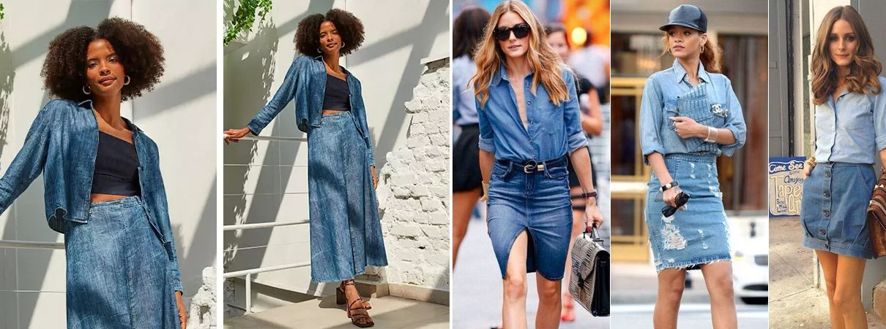
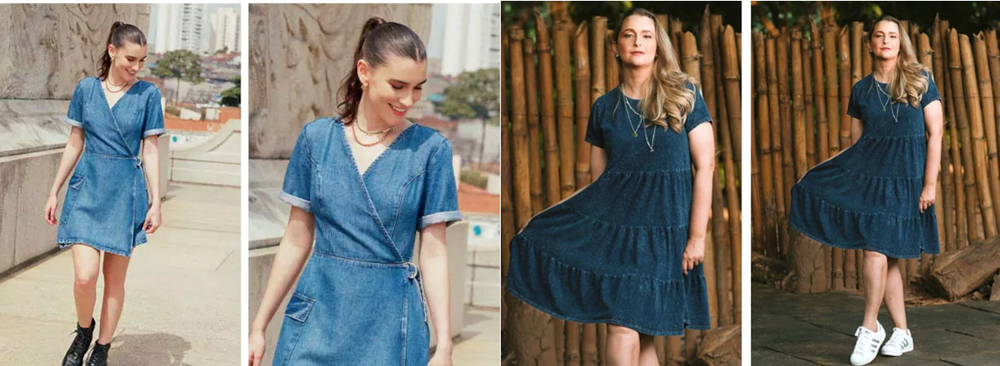
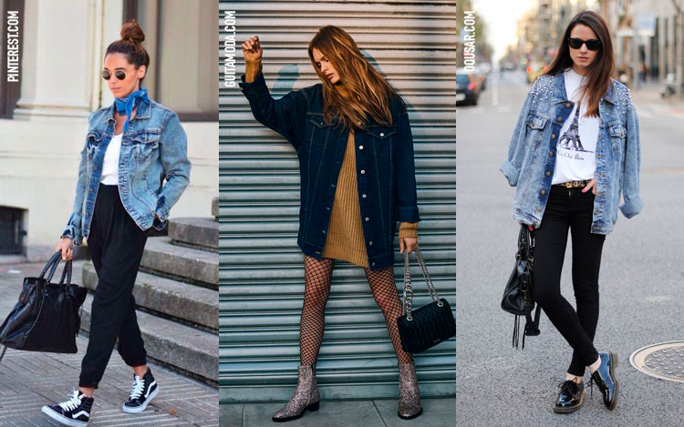
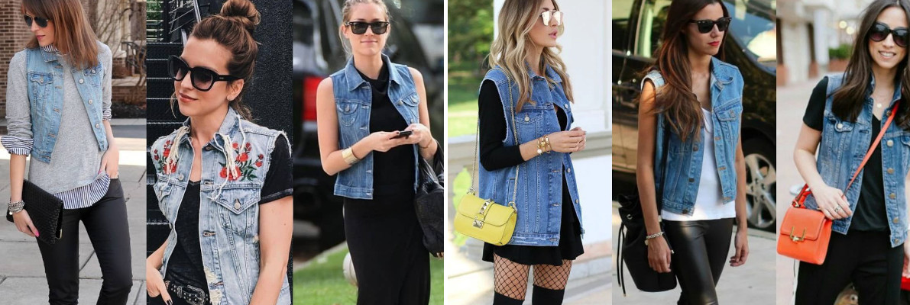
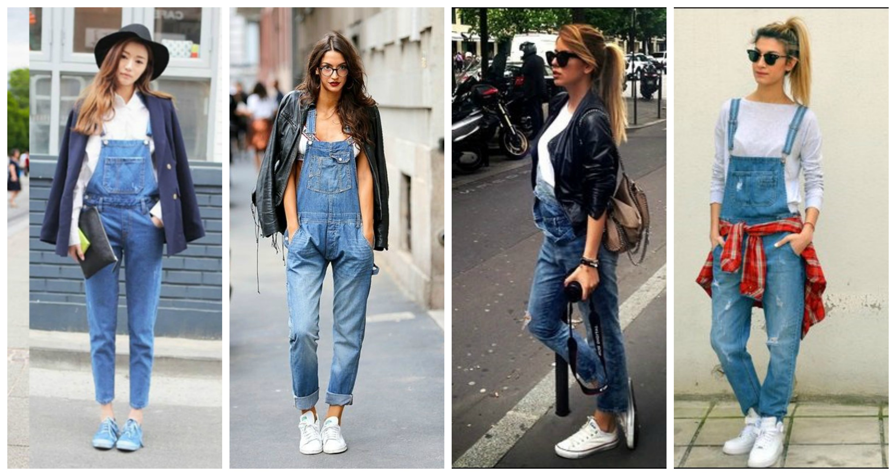
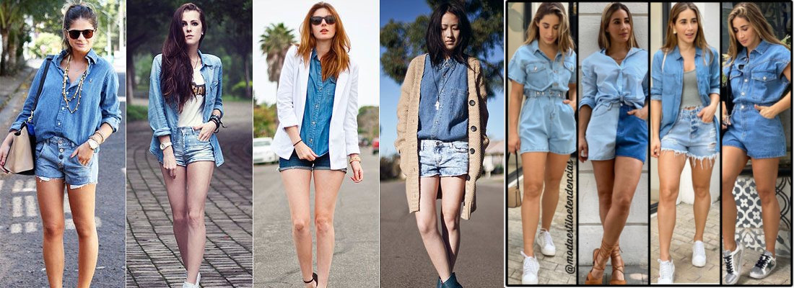
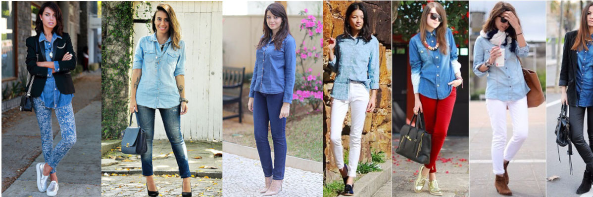

(502) 5513-5773
(502) 5513-5773
Descubriendo la tendencia jeans sobre jeans.
¿Alguna vez te has encontrado pensando en cómo usar jeans con jeans y tenías miedo de armar outfits? Si es así, ¡es hora de dejar ese prejuicio a un lado y lanzarse a esta tendencia que es popular cada temporada! Después de todo, los jeans son una prenda democrática y merecen un espacio especial en tu armario.
Al combinar dos piezas de mezclilla, es importante tener cuidado de no caer en la misma. Un consejo valioso es invertir en diferentes accesorios, como zapatos y bolsos coloridos, para darle ese toque especial a tu look.
Intente combinar diferentes lavados de jeans y cambiar los diseños de las piezas para crear looks interesantes y únicos. ¿Qué tal optar por un crop top moderno con pantalones de campana, unos shorts con camisas o descubrir modelos con cortes y formas innovadores?
Falda y camisa

Dependiendo del largo de la falda, puedes usarla incluso para eventos más formales. Invierte en estilos de faldas midi para una apariencia elegante y complétalas con tacones altos, collares largos o accesorios de mezclilla para darle un toque extra de estilo.
Vestido Jeans

Chaquetas vaqueras

Clásicas y versátiles, las chaquetas vaqueras son imprescindibles en cualquier armario. Intente combinarlo con sus jeans favoritos para una apariencia casual y relajada.
Chalecos de mezclilla

¡Los chalecos vaqueros vuelven con todo! Prueba diferentes modelos y combinaciones para encontrar el que más te convenga. Combínalo con pantalones o faldas de mezclilla y complétalo con blusas de manga larga o corta o una camiseta sin mangas debajo para una apariencia elegante.
Overoles de mezclilla

Versátiles y prácticos, los monos vaqueros son una pieza única que a todo el mundo le encanta. Intente usar camisas estampadas o lisas debajo para una apariencia diferente y complemente con zapatillas cómodas o sandalias planas para una apariencia relajada, o tacones altos para una ocasión más elegante. En los días más fríos, agregue un blazer o una chaqueta vaquera encima para mantenerse abrigado y elegante.
Shorts y Camisa

Los shorts vaqueros son auténticos comodines en el armario, permitiendo infinidad de combinaciones. Para una apariencia totalmente de mezclilla, intente usar pantalones cortos con camisas en diferentes lavados, blusas y camisetas sin mangas para una apariencia moderna. Haz un nudo al final de la blusa para darle un toque extra de estilo y complétala con tacones o zapatos planos en tus pies y tu collar favorito.
Pantalones y camisa

Es un clásico que nunca pasa de moda. Además de ser hermoso y cómodo, este dúo es extremadamente versátil y puede pasar fácilmente del día a la noche. Para lucir esta combinación, elige jeans con camisas más ligeras. Añade un cinturón colorido o de un solo color para darle un toque de estilo y elige entre zapatos Oxford, zapatillas deportivas o unos bonitos zapatos de tacón para completar el look. Ahora que has aprendido a usar jeans con jeans, ¡es hora de lucir las combinaciones y mostrar tu estilo!